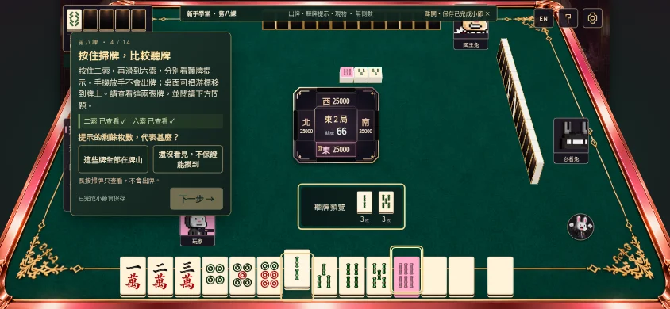
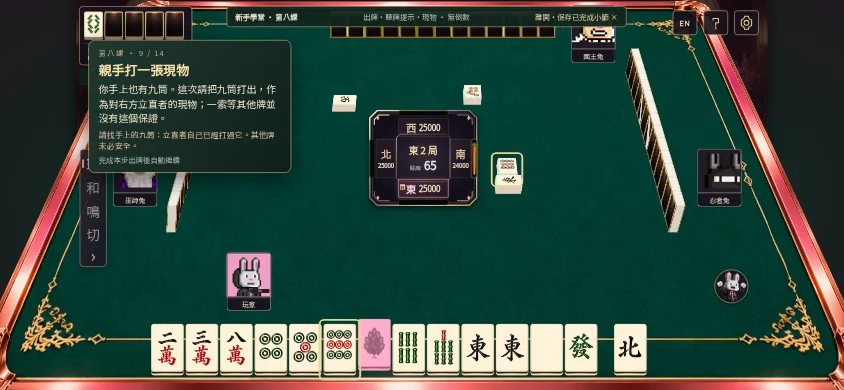

BUNNY ACADEMY · COURSE 08出牌與防守入門
十四步、四個固定牌例。先看自己的組合，再看對手牌河，親手練習現物防守。
開始第八課 →01｜保留搭子，按住掃牌
先保留二三萬，再長按並掃過二索、六索，查看抬起的手牌與牌河中的紫色同款牌提示。放手不會出牌。

02｜找到立直者的現物
對手真的立直並支付1,000點。點出牌河九筒，再打出手中的九筒；現物只對這位玩家安全。

03｜進攻或防守，先比較
離聽牌仍遠時先考慮防守；已聽牌、有役也要比較牌值與放銃風險。筋與壁不是保證安全，留待進階介紹。
首次完成300本機體驗紅蘿蔔，八課累計2400；下一課：上桌前的引導實戰，目前尚未開放。